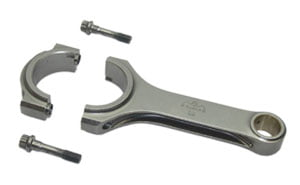

-
Whaddup ya'll,
Been searching for other rod options for my friend and I's N/A VG34E build. I'd like something lighter then *TT* rods.
Came across Scat rods....they're made in America and American labor isn't cheap but the price is right on these rods....10bucks less then Chinese made Eagle rods.http://www.importperformanceparts.net
ThanksInAdvance.Ucked Fup!!! -
We run a Scat V4 in one of the midgets. It's prolly 15 years old and the only thing we ever do is new rings and bearings each season. Figure a V4 small block chevy that turns 8500-9500 solid for 25-30 laps at a time.
The VW parts they make are top notch as well.http://z31performance.com/forum/viewtopic.php?f=5&t=147 -
That's good stuff, thanks brother.Steve88t wrote: We run a Scat V4 in one of the midgets. It's prolly 15 years old and the only thing we ever do is new rings and bearings each season. Figure a V4 small block chevy that turns 8500-9500 solid for 25-30 laps at a time.
The VW parts they make are top notch as well.
I wonder why they're so cheap. I wonder why their rods are so cheap???
I'm a Vag fan and I'd like some rods for them for a VR6.Ucked Fup!!! -
Well, I did some reading and all the reviews I've found on these rods have been stellar. They seem almost to good to be true for the price but having checked their VW offerings they just seem to be a great company that isn't greedy.
My father laughed his ass off when I asked him if he's heard of Scat. Apparently he was using their Stroker kits for Vags when I was suking the titty.Ucked Fup!!! -
i know a few ppl run those in honda b series setups for boost. I hear they are great and good price -
They are great rods. i think they are still made here in the usa too. lots of Hondas I know run them, that and lots of custom set ups on GN's and some Turbo stangs.Gone - 1988 Shiro
2004 BMW 330Ci
2005 BMW 330i
1991 Twin Turbo Z's (Red and Black)
http://www.E46Turbo330Ci.com -
Thanks for chimming in(you 2 Z31SPL).NIVO wrote: They are great rods. i think they are still made here in the usa too. lots of Hondas I know run them, that and lots of custom set ups on GN's and some Turbo stangs.
I've been doing some Google searching and found nothing but stellar feedback on these rods(the VW guys frellin love em). I found some Supra dudes running over 1200HP with these rods and the ARP 2000 bolts on their 2JZ's. These guys have em for $403 bucks, probably the best deal on the planet for forged rods and they're made in america…what a shock. http://www.cnc-motorsports.com/product. … tgID=19072Ucked Fup!!! -
sexyVG36ET wrote:
I've been doing some Google searching and found nothing but stellar feedback on these rods(the VW guys frellin love em). I found some Supra dudes running over 1200HP with these rods and the ARP 2000 bolts on their 2JZ's. These guys have em for $403 bucks, probably the best deal on the planet for forged rods and they're made in america…what a shock. http://www.cnc-motorsports.com/product. … tgID=19072
damn, h-beams for that much!?
mm… now im dreaming up ideas of forged interals -
Pretty good price! and what do you know! they look IDENTICAL to all of the other H-beam rods out there, even the china made Eagle's.
Still pretty good prices wish I woulda knew about them a while ago ops:
ops:
Meh what do ya do? Boost and prey I guess. Hmm that sounds like a new sig to me.
EDIT: wait a second! it says 400 for one rod! that cant be right. they mean for one set right? RIGHT! :shock: NOT $2400 RIGHT!85 Z31 6.0 LSX turbo 766whp/792wtq
04 GTO, LS6, big cam, porting, N20… underway for summertime daily driver. -
no eff'in way

these look wimpy to the scats -
The price is right but.... uhh.. ^^ :?:ââ¬Â¢ Rated to 650 HP -
If you look at whats available, there are rods like eagle in the $500ish range, prolly ok for most people.
Then there are the 1k-1500 range where you will find JE and such which will take tons of horsepower but not for an abused engine for long years.
Then you have the stupid money built by true race mfg's like scat that given you don't break a few absolute rules, their parts will never fail for 99.99999% of the users.
I've only heard of two VG engines failing from rod breakage. They were stock junkyard engines that were WAY beyond common sense at the time of breakage. This leads me to believe two things. 1) The stock rods are strong. 2) The engine is well designed so as to reduce failure.
But even those two things will not give you much ground when looking at numbers like 600hp from a 3 liter engine. That is really starting to push materials and insurance is cheap. Loose one rod at that power level and you junk everything.http://z31performance.com/forum/viewtopic.php?f=5&t=147 -
You are kidding right :shock: the scat rods look SLIGHTLY wider but that about it. I suppose the wrist pin hole is a little wider too but over all its the same shit. BUT better price :twisted:88sinZ wrote: no eff'in way
these look wimpy to the scats85 Z31 6.0 LSX turbo 766whp/792wtq
04 GTO, LS6, big cam, porting, N20… underway for summertime daily driver. -
i cant seem to dig up the OE diameters, but are the Scats in spec with OE regarding the connecting rod and wrist pin diameters?
+made in USASATAN wrote: over all its the same shit. BUT better price
case in point -
[quote]88sinZ wrote: i cant seem to dig up the OE diameters, but are the Scats in spec with OE regarding the connecting rod and wrist pin diameters?
Yeah cause I'm sure the CNC machines programed to make the rods really give a shit which country they are working in :roll:Originally posted by SATAN85 Z31 6.0 LSX turbo 766whp/792wtq
04 GTO, LS6, big cam, porting, N20… underway for summertime daily driver.

Copyright © 2006–. All rights reserved. Privacy Policy